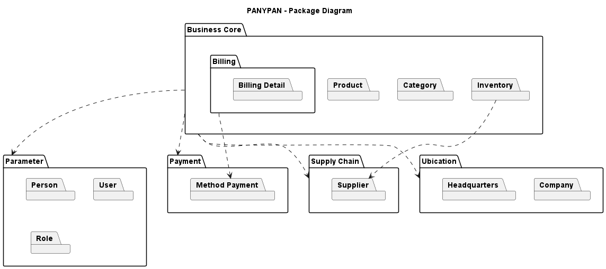
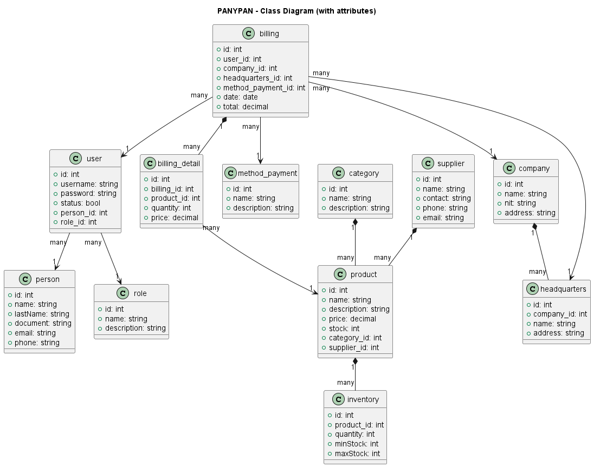
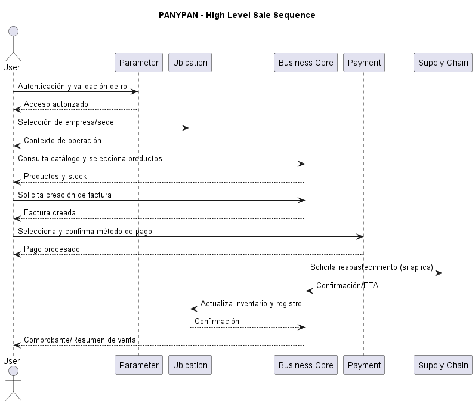
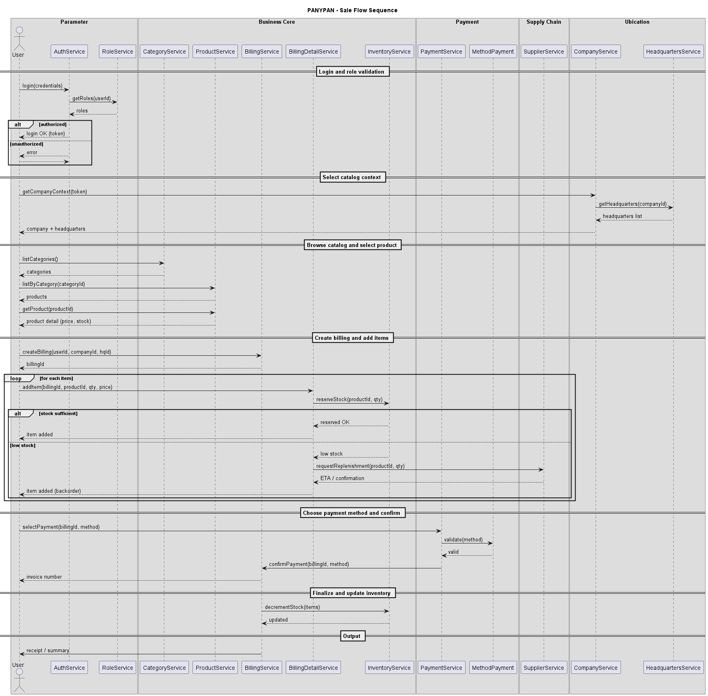
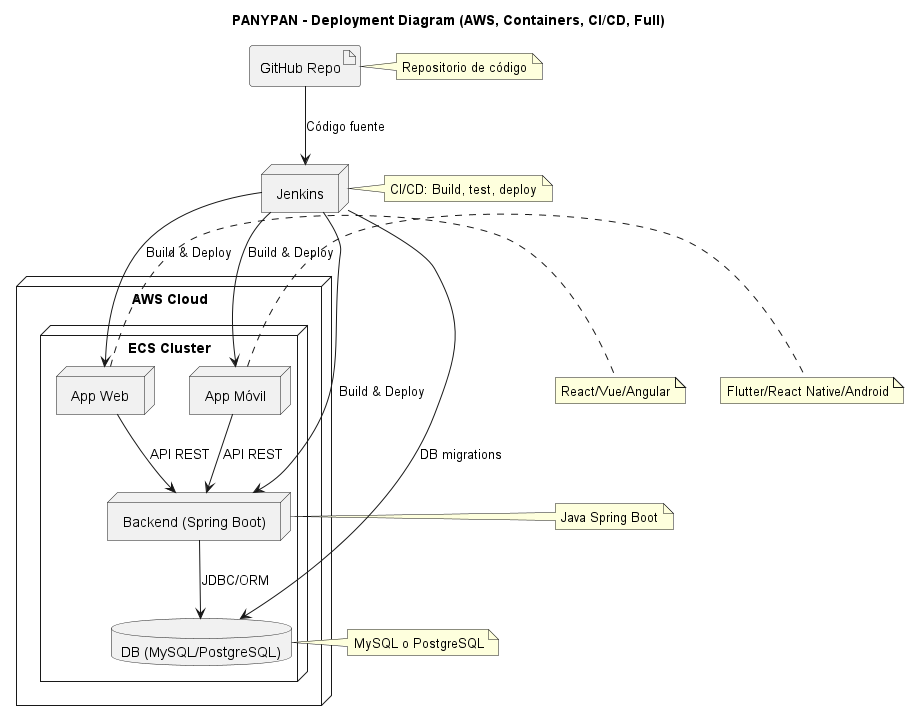
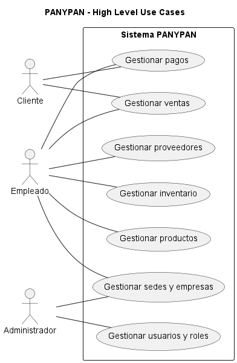
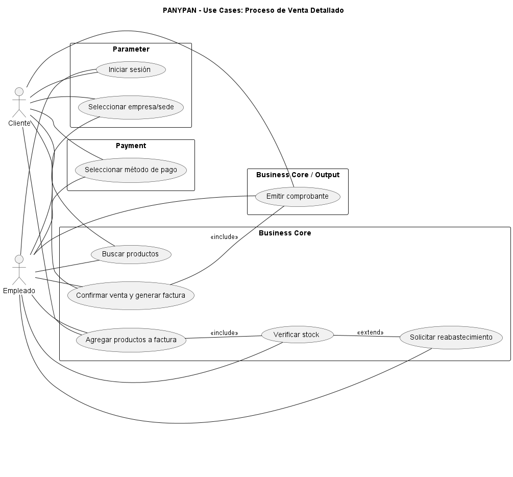

Gestión integral de procesos empresariales: datos, arquitectura y transacciones
El proyecto PAY & PAN integra de manera modular dos componentes fundamentales del sistema PANYPAN: la capa de gestión de datos y pagos (PAY) y la capa de arquitectura y procesos de negocio (PAN). Esta presentación reúne toda la documentación, diagramas y scripts que sustentan su diseño y desarrollo.
El módulo PAY se centra en la estructura de la base de datos, describiendo tablas y relaciones para gestionar entidades como compañías, sedes, personas, usuarios, roles, productos, facturación, inventario, métodos de pago y proveedores. La documentación de este módulo incluye el modelo entidad‑relación, scripts SQL y documentos técnicos asociados.
El módulo PAN presenta la arquitectura lógica y de interacción del sistema: diagramas de paquetes, clases, secuencias y casos de uso que muestran cómo los actores (clientes, empleados y administradores) interactúan con los servicios de negocio, parámetros, ubicación, pagos y cadena de suministro. Incluye tanto las imágenes como el código fuente en PlantUML para facilitar su edición y comprensión.
Utilice las pestañas superiores para explorar cada módulo. En cada sección encontrará subtabs que le permitirán navegar por los distintos artefactos.
Este módulo documenta el diseño de base de datos utilizado por PANYPAN. Se incluyen descripciones textuales, scripts de creación y los archivos fuente generados mediante MySQL Workbench. Puede explorar cada subsección para profundizar en el modelo o descargar los archivos correspondientes.
Descripción general del esquema de la base de datos:
context: La creación de la estructura de una base de datos es una etapa fundamental en el desarrollo de software, ya que garantiza la organización, integridad y eficiencia en el manejo de la información. En el contexto del proyecto formativo PANYPAN, se ha diseñado una base de datos relacional que responde a las necesidades de gestión de productos, ventas, clientes y usuarios. A través de MySQL Workbench, se ha elaborado el modelo entidad-relación y se han aplicado las restricciones necesarias como llaves primarias y foránea.
# Sistema de Información para PANYPAN
*** bussines core
- category
- prodoct
- billing
- billing_detail
- inventory
*** parameter
- person
- user
- role
*** payment
- method_payment
** supply chain
- supplier
** ubication
- company
- headquarters
Puede descargar los siguientes documentos de base de datos:
A continuación se muestra un extracto del script de creación de tablas. Puede descargar el archivo completo para más detalles.
-- ==========================================================
-- PANYPAN – Core Schema (MySQL 8.0+)
-- Notes:
-- - Singular names, PK = id
-- - FK columns named <entity>_id
-- - `user` se escapa con backticks por ser palabra reservada
-- - Timestamps con CURRENT_TIMESTAMP
-- ==========================================================
-- =========================
-- UBICATION / LOCATION
-- =========================
CREATE TABLE company (
id BIGINT UNSIGNED NOT NULL AUTO_INCREMENT,
legal_name VARCHAR(150) NOT NULL,
trade_name VARCHAR(150),
tax_id VARCHAR(32) NOT NULL,
email VARCHAR(120),
phone VARCHAR(40),
address VARCHAR(200),
city VARCHAR(100),
state VARCHAR(100),
country VARCHAR(100),
postal_code VARCHAR(20),
is_active TINYINT(1) NOT NULL DEFAULT 1,
created_at TIMESTAMP NOT NULL DEFAULT CURRENT_TIMESTAMP,
updated_at TIMESTAMP NOT NULL DEFAULT CURRENT_TIMESTAMP ON UPDATE CURRENT_TIMESTAMP,
PRIMARY KEY (id),
UNIQUE KEY uq_company_tax_id (tax_id)
) ENGINE=InnoDB DEFAULT CHARSET=utf8mb4;
CREATE TABLE headquarter (
id BIGINT UNSIGNED NOT NULL AUTO_INCREMENT,
company_id BIGINT UNSIGNED NOT NULL,
code VARCHAR(20) NOT NULL,
name VARCHAR(120) NOT NULL,
email VARCHAR(120),
phone VARCHAR(40),
address VARCHAR(200),
city VARCHAR(100),
state VARCHAR(100),
country VARCHAR(100),
postal_code VARCHAR(20),
is_active TINYINT(1) NOT NULL DEFAULT 1,
created_at TIMESTAMP NOT NULL DEFAULT CURRENT_TIMESTAMP,
updated_at TIMESTAMP NOT NULL DEFAULT CURRENT_TIMESTAMP ON UPDATE CURRENT_TIMESTAMP,
PRIMARY KEY (id),
UNIQUE KEY uq_headquarter_company_code (company_id, code),
UNIQUE KEY uq_headquarter_company_name (company_id, name),
CONSTRAINT fk_headquarter_company
FOREIGN KEY (company_id) REFERENCES company(id)
ON DELETE RESTRICT ON UPDATE CASCADE
) ENGINE=InnoDB DEFAULT CHARSET=utf8mb4;
-- Más tablas en el archivo completo...
El módulo PAN describe la arquitectura y el flujo de interacción de PANYPAN. Cada subpestaña presenta un conjunto de diagramas con su código PlantUML correspondiente. Puede copiar el código para modificar los diagramas o descargar las imágenes para su documentación.

@startuml panypany-packages-simple
' PANYPAN - Packages (minimal ASCII version)
title PANYPAN - Package Diagram
package "Business Core" as BusinessCore {
package Category
package Product
package Billing {
package "Billing Detail"
}
package Inventory
}
package "Parameter" as Parameter {
package Person
package User
package Role
}
package "Payment" as Payment {
package "Method Payment"
}
package "Supply Chain" as SupplyChain {
package Supplier
}
package "Ubication" as Ubication {
package Company
package Headquarters
}
BusinessCore ..> Parameter
BusinessCore ..> Payment
BusinessCore ..> SupplyChain
BusinessCore ..> Ubication
Billing ..> "Method Payment"
Inventory ..> Supplier
@enduml

@startuml class-panypany
' PANYPAN – Class Diagram (IDs and FKs only, style as example)
title PANYPAN – Class Diagram (IDs only)
' --- PARAMETER ---
class person {
+ id
}
class user {
+ id
+ person_id
+ role_id
}
class role {
+ id
}
' --- BUSINESS CORE ---
class category {
+ id
}
class product {
+ id
+ category_id
+ supplier_id
}
class inventory {
+ id
+ product_id
}
class billing {
+ id
+ user_id
+ company_id
+ headquarters_id
+ method_payment_id
}
class billing_detail {
+ id
+ billing_id
+ product_id
}
' --- PAYMENT ---
class method_payment {
+ id
}
' --- SUPPLY CHAIN ---
class supplier {
+ id
}
' --- UBICATION ---
class company {
+ id
}
class headquarters {
+ id
+ company_id
}
' --- RELATIONSHIPS ---
category "1" *-- "many" product
supplier "1" *-- "many" product
product "1" *-- "many" inventory
billing "1" *-- "many" billing_detail
billing_detail "many" --> "1" product
billing "many" --> "1" user
user "many" --> "1" person
user "many" --> "1" role
billing "many" --> "1" company
billing "many" --> "1" headquarters
billing "many" --> "1" method_payment
company "1" *-- "many" headquarters
@enduml

@startuml panypany-sequence-highlevel
' PANYPAN - High Level Sequence Diagram (macroflujo)
' Solo paquetes principales, sin detalle de servicios internos
title PANYPAN - High Level Sale Sequence
actor User
participant "Parameter" as Parameter
participant "Ubication" as Ubication
participant "Business Core" as BusinessCore
participant "Payment" as Payment
participant "Supply Chain" as SupplyChain
User -> Parameter: Autenticación y validación de rol
Parameter --> User: Acceso autorizado
User -> Ubication: Selección de empresa/sede
Ubication --> User: Contexto de operación
User -> BusinessCore: Consulta catálogo y selecciona productos
BusinessCore --> User: Productos y stock
User -> BusinessCore: Solicita creación de factura
BusinessCore --> User: Factura creada
User -> Payment: Selecciona y confirma método de pago
Payment --> User: Pago procesado
BusinessCore -> SupplyChain: Solicita reabastecimiento (si aplica)
SupplyChain --> BusinessCore: Confirmación/ETA
BusinessCore -> Ubication: Actualiza inventario y registro
Ubication --> BusinessCore: Confirmación
BusinessCore --> User: Comprobante/Resumen de venta
@enduml

@startuml panypany-sequence-sale
' PANYPAN - Sequence Diagram (Sale flow)
' ASCII-only for maximum compatibility
title PANYPAN - Sale Flow Sequence
' Group participants by package using boxes
box "Parameter"
actor User as user
participant "AuthService" as auth
participant "RoleService" as role
end box
box "Business Core"
participant "CategoryService" as category
participant "ProductService" as product
participant "BillingService" as billing
participant "BillingDetailService" as billingDetail
participant "InventoryService" as inventory
end box
box "Payment"
participant "PaymentService" as payment
participant "MethodPayment" as methodPayment
end box
box "Supply Chain"
participant "SupplierService" as supplier
end box
box "Ubication"
participant "CompanyService" as company
participant "HeadquartersService" as hq
end box
== Login and role validation ==
user -> auth: login(credentials)
auth -> role: getRoles(userId)
role --> auth: roles
alt authorized
auth --> user: login OK (token)
else unauthorized
auth --> user: error
return
end
== Select catalog context ==
user -> company: getCompanyContext(token)
company -> hq: getHeadquarters(companyId)
hq --> company: headquarters list
company --> user: company + headquarters
== Browse catalog and select product ==
user -> category: listCategories()
category --> user: categories
user -> product: listByCategory(categoryId)
product --> user: products
user -> product: getProduct(productId)
product --> user: product detail (price, stock)
== Create billing and add items ==
user -> billing: createBilling(userId, companyId, hqId)
billing --> user: billingId
loop for each item
user -> billingDetail: addItem(billingId, productId, qty, price)
billingDetail -> inventory: reserveStock(productId, qty)
alt stock sufficient
inventory --> billingDetail: reserved OK
billingDetail --> user: item added
else low stock
inventory --> billingDetail: low stock
billingDetail -> supplier: requestReplenishment(productId, qty)
supplier --> billingDetail: ETA / confirmation
billingDetail --> user: item added (backorder)
end
end
== Choose payment method and confirm ==
user -> payment: selectPayment(billingId, method)
payment -> methodPayment: validate(method)
methodPayment --> payment: valid
payment -> billing: confirmPayment(billingId, method)
billing --> user: invoice number
== Finalize and update inventory ==
billing -> inventory: decrementStock(items)
inventory --> billing: updated
== Output ==
billing -> user: receipt / summary
@enduml

@startuml deployment-aws-full
' PANYPAN – Deployment Diagram (AWS, containers, CI/CD, jerarquía completa)
title PANYPAN – Deployment Diagram (AWS, Containers, CI/CD, Full)
artifact "GitHub Repo" as github
node "Jenkins" as jenkins
node "AWS Cloud" as aws {
node "ECS Cluster" as ecs {
node "Backend (Spring Boot)" as backend
node "App Web" as webapp
node "App Móvil" as mobileapp
database "DB (MySQL/PostgreSQL)" as db
}
}
' --- CI/CD Connections ---
github --> jenkins : Código fuente
jenkins --> backend : Build & Deploy
jenkins --> webapp : Build & Deploy
jenkins --> mobileapp : Build & Deploy
jenkins --> db : DB migrations
' --- App Communications ---
webapp --> backend : API REST
mobileapp --> backend : API REST
backend --> db : JDBC/ORM
note right of github : Repositorio de código
note right of jenkins : CI/CD: Build, test, deploy
note right of backend : Java Spring Boot
note right of webapp : React/Vue/Angular
note right of mobileapp : Flutter/React Native/Android
note right of db : MySQL o PostgreSQL
@enduml

@startuml panypany-usecase-highlevel
' PANYPAN - High Level Use Case Diagram
title PANYPAN - High Level Use Cases
' Mejor visualización vertical: actores a la izquierda, casos de uso en columna
left to right direction
actor Cliente as C
actor Empleado as E
actor Administrador as A
rectangle "Sistema PANYPAN" {
usecase UC1 as "Gestionar ventas"
usecase UC2 as "Gestionar inventario"
usecase UC3 as "Gestionar productos"
usecase UC4 as "Gestionar pagos"
usecase UC5 as "Gestionar usuarios y roles"
usecase UC6 as "Gestionar proveedores"
usecase UC7 as "Gestionar sedes y empresas"
}
C -- UC1
C -- UC4
E -- UC1
E -- UC2
E -- UC3
E -- UC4
E -- UC6
E -- UC7
A -- UC5
A -- UC7
@enduml

@startuml panypany-usecase-sale-detail
' PANYPAN - Detailed Use Case Diagram (Venta)
title PANYPAN - Use Cases: Proceso de Venta Detallado
left to right direction
actor Cliente as C
actor Empleado as E
rectangle "Parameter" {
usecase UC1 as "Iniciar sesión"
usecase UC2 as "Seleccionar empresa/sede"
}
rectangle "Business Core" {
usecase UC3 as "Buscar productos"
usecase UC4 as "Agregar productos a factura"
usecase UC5 as "Verificar stock"
usecase UC6 as "Solicitar reabastecimiento"
usecase UC8 as "Confirmar venta y generar factura"
}
rectangle "Payment" {
usecase UC7 as "Seleccionar método de pago"
}
rectangle "Business Core / Output" {
usecase UC9 as "Emitir comprobante"
}
C -- UC1
C -- UC2
C -- UC3
C -- UC4
C -- UC7
C -- UC8
C -- UC9
E -- UC1
E -- UC2
E -- UC3
E -- UC4
E -- UC5
E -- UC6
E -- UC7
E -- UC8
E -- UC9
UC4 -- UC5 : <<include>>
UC5 -- UC6 : <<extend>>
UC8 -- UC9 : <<include>>
@enduml